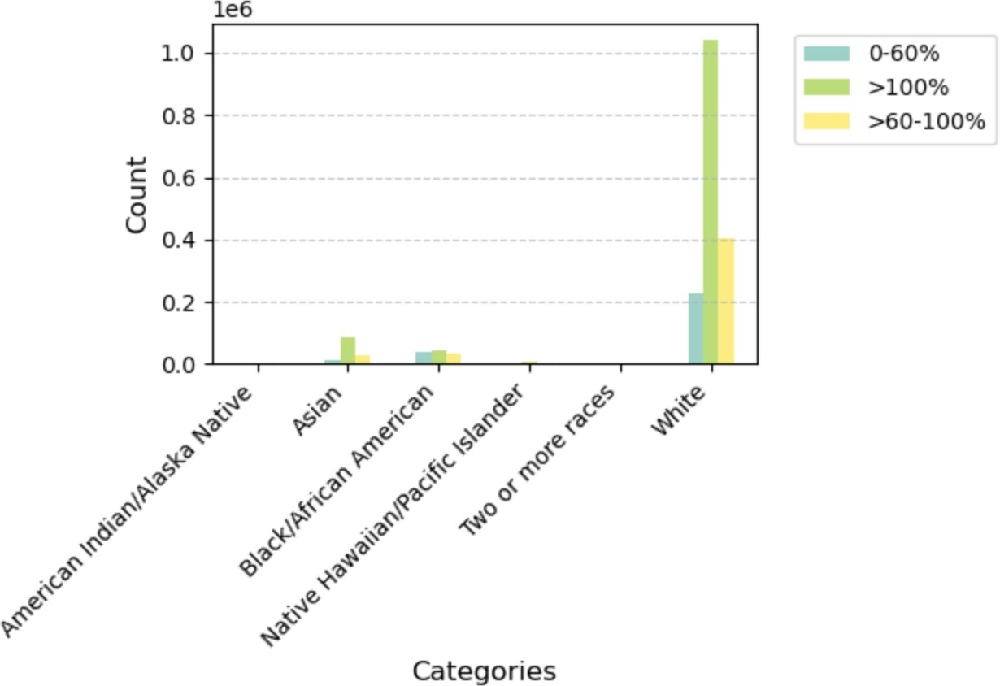
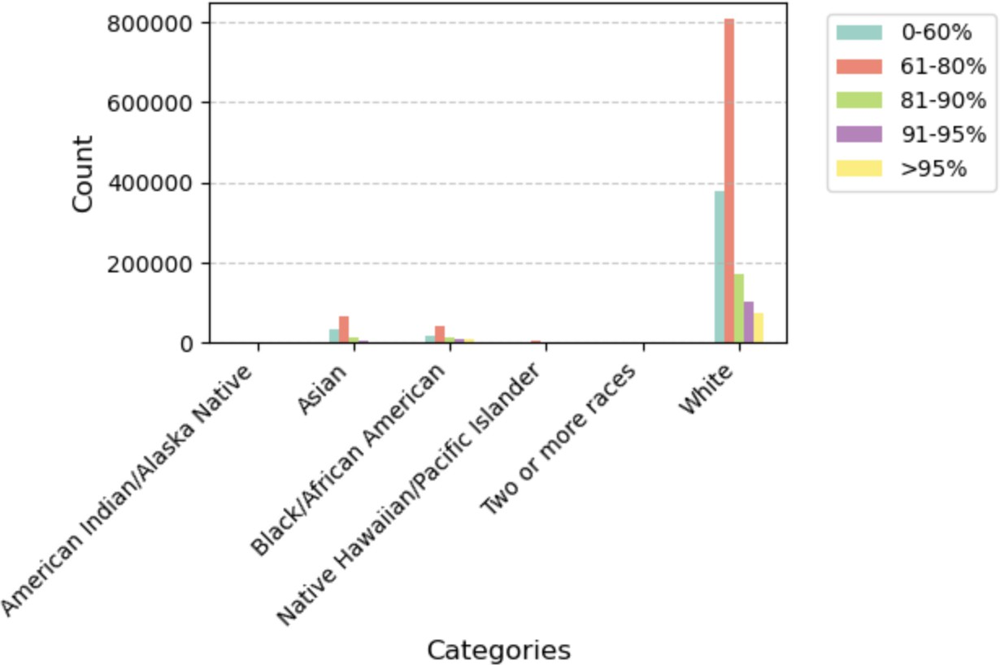
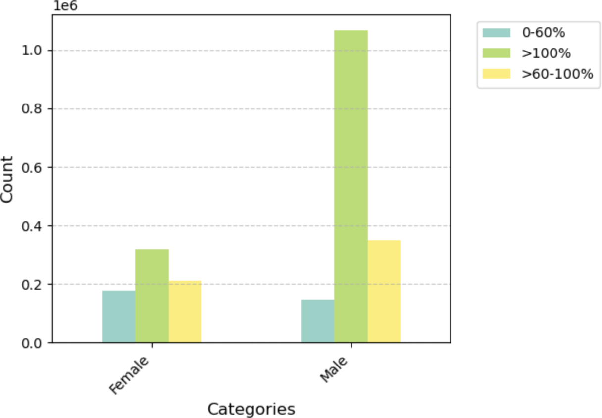
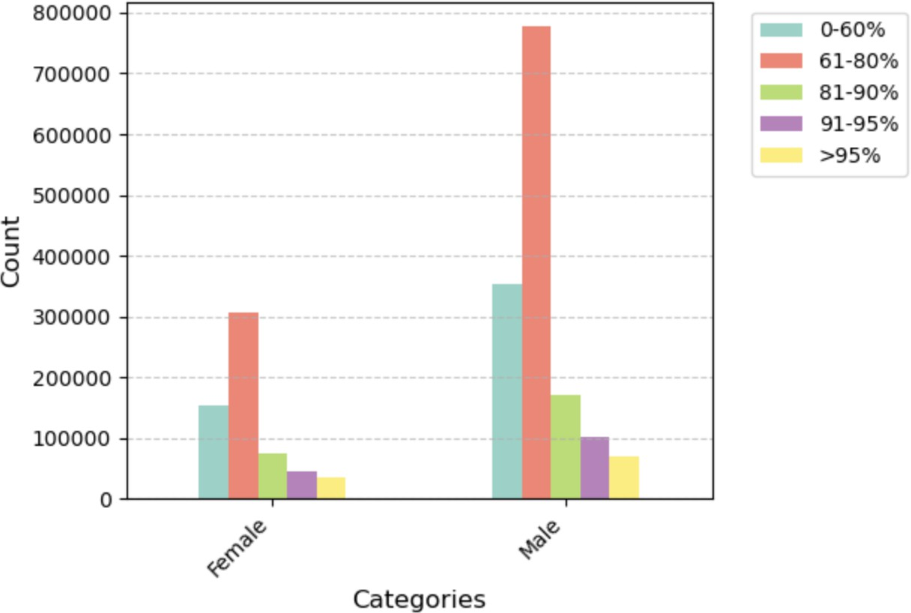

At a Glance
I analyzed 2.5 million Fannie Mae mortgage records to measure whether AI lending models discriminate by race and gender. Using two formal fairness metrics, I confirmed that bias exists in the data — then tested whether a reweighting technique actually reduces it after classifier training. This matters to any organization using AI for hiring, lending, or other high-stakes decisions.

Problem
Machine learning models used in lending decisions inherit the biases present in their training data — and historical housing lending data in the United States is shaped by decades of documented discriminatory practice. When an ML model trained on Fannie Mae mortgage records learns which applicant profiles correlate with loan approval, it does not learn from neutral data: it learns from the outcomes of a market that systematically disadvantaged applicants by race and gender. Measuring that bias requires formal fairness metrics that go beyond accuracy, and mitigating it requires pre-processing techniques that reweight the training data before a classifier ever sees it. The critical question is not whether bias can be measured — it can — but whether bias mitigation techniques that work at the data level survive the training process and produce a fairer classifier at the output level. The answer has direct implications for any organization deploying predictive models in high-stakes domains.
Solution
This Georgia Tech CS 6603 final project applied two established fairness metric algorithms — Disparate Impact and Statistical Parity Difference — to 2,558,959 Fannie Mae single-family mortgage originations from 2008, analyzing outcomes across Race and Gender as protected attributes. Both metrics confirmed statistically significant disparities in loan approval rates across demographic groups, quantifying the bias embedded in the historical record. A Reweighting pre-processing technique was then applied to adjust sample weights and balance approval rates across demographic groups before classifier training. Two classifiers were trained — one on the original data and one on the reweighted data — and their fairness metrics were compared on the held-out test set. The finding: Reweighting improved fairness metrics on the training data, but the bias substantially re-emerged after classifier training, demonstrating that pre-processing bias mitigation alone is insufficient for producing a fair deployed model.
Skills Acquired
- Python — the implementation language for the full pipeline: dataset loading, fairness metric computation, reweighting, classifier training, and comparative evaluation across protected attribute groups.
- Pandas — used to load and process the 2.5M-row Fannie Mae dataset, filter for relevant columns, encode protected attributes, and segment the dataset by demographic group for fairness metric computation. Working with a dataset at this scale required careful memory management and selective column loading.
- NumPy — used for the numerical operations underlying the fairness metric calculations and for manipulating the sample weight arrays produced by the Reweighting algorithm.
- Jupyter — the reproducible analysis environment for the full project, combining code, outputs, and written interpretation in a single document that could be reviewed and verified by the course team.
- Fairness Metrics — the formal mathematical measures used to quantify bias in the dataset and classifier outputs. Disparate Impact measures the ratio of favorable outcome rates between unprivileged and privileged groups; Statistical Parity Difference measures the absolute difference in those rates. Both are industry-standard metrics used in algorithmic auditing.
- Bias Mitigation — the technique applied to attempt to reduce measured bias before classifier training. The Reweighting algorithm assigns higher sample weights to underrepresented combinations of protected attributes and favorable outcomes, theoretically balancing the training distribution. The project's central finding is that this improvement does not fully survive the subsequent classifier training step.
- Georgia Tech CS6603 — the course context: AI, Ethics, and Society, part of the Online MSCS program at Georgia Tech. The course framing shaped the project's analytical lens — treating algorithmic fairness not as an abstract research problem but as an engineering accountability question with direct implications for real systems deployed on real people.
What those metrics reveal — and what the mitigation results say about the limits of pre-processing fairness interventions — is the core of what follows.
Deep Dive
When a lender uses an ML model to evaluate a mortgage application, it processes numbers — income ratios, loan-to-value ratios, credit history. But embedded in that data are patterns shaped by decades of systemic inequality. The question this project asks is not whether bias exists in housing lending data. It asks: how much, for whom, and can pre-processing fix it?
This was the Final Project for CS6603 — AI, Ethics, and Society, part of the Online Master of Science in Computer Science (OMSCS) program at Georgia Tech. The project applies two established fairness metric algorithms (Disparate Impact and Statistical Parity Difference) to the 2008 Fannie Mae Single-Family Mortgage Dataset across Race and Gender, then applies a Reweighting pre-processing bias mitigation technique and measures whether it survives classifier training.
Step 1 — Dataset Selection
The dataset selected is the Enterprise Public Use Database: Single-Family Properties: National File A: Release of 2008 Data — the Fannie Mae Dataset. It contains 2,558,959 observations and 16 variables, belonging to the Housing and Public Administration regulated domain, subject to the Fair Housing Act and the Equal Credit Opportunity Act.
The dependent/outcome variables selected are:
- Borrower Income Ratio — borrower's annual income divided by area median family income for 2008
- Loan-to-Value (LTV) at Origination — loan amount divided by home value
Table 1 shows the 5 variables in the dataset associated with a legally recognized protected class:
| Variable | Protected Classes Associated with each Variable |
|---|---|
| 2000 Census Tract — Percent Minority | Race, Color, Ethnicity, National Origin |
| Borrower Race or National Origin, and Ethnicity | Race, Color, Ethnicity, National Origin |
| Co-Borrower Race or National Origin, and Ethnicity | Race, Color, Ethnicity, National Origin |
| Borrower Gender | Gender |
| Co-Borrower Gender | Gender |
Table 1 — Variables in the 2008 Single-Family Residences Fannie Mae Dataset
Table 2 shows the Legal Precedence/Law associated with each protected class from Table 1:
| Protected Class | Legal Precedence/Law |
|---|---|
| Race | Civil Rights Act of 1964, 1991 |
| Color | Civil Rights Act of 1964, 1991 |
| Ethnicity | Civil Rights Act of 1964, 1991 |
| National Origin | Civil Rights Act of 1964, 1991 |
| Gender | Equal Pay Act of 1963; Civil Rights Act of 1964, 1991 |
Table 2 — Legal Precedence/Law for each Protected Class in Table 1
Step 2 — Explore the Dataset
Table 3 displays the members/subgroups associated with the protected class variables in the dataset. Members/Subgroups have been discretized into discrete numerical values.
| Variable | Protected Classes | Members/Subgroups |
|---|---|---|
| 2000 Census Tract — Percent Minority | Race, Color, Ethnicity, National Origin | 1 = 0–<10% 2 = 10–<30% 3 = 30–100% 9 = Missing |
| Borrower Race or National Origin, and Ethnicity | Race, Color, Ethnicity, National Origin | 1 = American Indian or Alaska Native 2 = Asian 3 = Black or African American 4 = Native Hawaiian or Other Pacific Islander 5 = White 6 = Two or more races 7 = Hispanic or Latino 9 = Not available/not applicable |
| Co-Borrower Race or National Origin, and Ethnicity | Race, Color, Ethnicity, National Origin | 1 = American Indian or Alaska Native 2 = Asian 3 = Black or African American 4 = Native Hawaiian or Other Pacific Islander 5 = White 6 = Two or more races 7 = Hispanic or Latino 9 = Not available/not applicable |
| Borrower Gender | Gender | 1 = Male 2 = Female 3 = Not provided (mail/telephone) 4 = Not applicable 9 = Missing |
| Co-Borrower Gender | Gender | 1 = Male 2 = Female 3 = Not provided (mail/telephone) 4 = Not applicable 9 = Missing |
Table 3 — Members/Subgroups Associated with Protected Class Variables in the Dataset
For this Final Project, two protected classes were selected: Race and Gender. Table 4 shows the four combinations of protected class and outcome variable used throughout the analysis:
| Combination # | Protected Class | Dependent/Outcome Variable |
|---|---|---|
| 1 | Race | Borrower Income Ratio |
| 2 | Race | Loan-to-Value Ratio (LTV) at Origination |
| 3 | Gender | Loan-to-Value Ratio (LTV) at Origination |
| 4 | Gender | Borrower Income Ratio |
Table 4 — Combinations of Selected Protected Classes with Selected Dependent/Outcome Variables
Table 5 describes the subgroups of each outcome variable:
| Dependent/Outcome Variable | Subgroups | Description |
|---|---|---|
| Borrower Income Ratio | 1 = 0–60% 2 = >60–100% 3 = >100% |
Borrower Income Ratio is a borrower's annual income divided by the area median family income for 2008. The lower the Borrower Income Ratio percentage, the lower a Borrower's income. |
| Loan-to-Value (LTV) at Origination | 1 = >0–≤60% 2 = >60–≤80% 3 = >80–≤90% 4 = >90–≤95% 5 = >95% |
LTV Ratio at Origination is the amount of the loan divided by the home value. Lower LTVs are generally achieved by wealthier borrowers as this indicates that they can afford to make a higher down payment. |
Table 5 — Subgroups of the Selected Dependent/Outcome Variables
Tables 6–9 show the frequency distributions for all four combinations. The "favorable" outcome for Income Ratio is 0–60% (lowest income tier, indicating the unprivileged group's concentration); the "favorable" outcome for LTV is 0–80% (indicating lower LTV, associated with wealthier borrowers).
Table 6 — Combination #1: Distribution of Borrower Income Ratio by Race
| Race | 0–60% | >60–100% | >100% | Total |
|---|---|---|---|---|
| American Indian or Alaska Native | 996 | 3,650 | 1,572 | 6,218 |
| Asian | 10,243 | 84,576 | 29,317 | 124,136 |
| Black or African American | 36,970 | 44,923 | 32,148 | 114,041 |
| Native Hawaiian or Other Pacific Islander | 1,478 | 6,969 | 2,926 | 11,373 |
| White | 225,555 | 1,042,756 | 402,109 | 1,670,420 |
| Two or More Races | 773 | 3,613 | 1,572 | 5,958 |

Plot 1 — Distribution of Borrower Income Ratio by Race. White borrowers dominate the >100% income tier; Black/African American borrowers are more concentrated in the 0–60% (lowest income) tier.
Table 7 — Combination #2: Distribution of LTV by Race
| Race | 0–60% | 61–80% | 81–90% | 91–95% | >95% |
|---|---|---|---|---|---|
| American Indian or Alaska Native | 1,554 | 2,680 | 667 | 391 | 311 |
| Asian | 33,522 | 68,276 | 12,162 | 5,542 | 1,980 |
| Black or African American | 16,961 | 40,878 | 13,206 | 10,021 | 10,038 |
| Native Hawaiian or Other Pacific Islander | 2,619 | 5,811 | 1,317 | 805 | 440 |
| White | 380,089 | 809,653 | 171,429 | 102,427 | 73,974 |
| Two or More Races | 1,148 | 2,824 | 737 | 480 | 255 |

Plot 2 — Distribution of LTV by Race. White borrowers have the largest 61–80% LTV share; Black/African American borrowers show relatively higher concentrations in the upper LTV buckets (81–95%+), indicating lower down-payment capacity.
Table 8 — Combination #3: Distribution of Borrower Income Ratio by Gender
| Gender | 0–60% | >60–100% | >100% |
|---|---|---|---|
| Female | 176,904 | 318,333 | 211,999 |
| Male | 147,157 | 1,068,533 | 349,659 |

Plot 3 — Distribution of Borrower Income Ratio by Gender. Male borrowers have a dramatically larger >100% income ratio count — roughly 3× female borrowers — reflecting the dataset's overall gender imbalance in high-income mortgage originations.
Table 9 — Combination #4: Distribution of LTV by Gender
| Gender | 0–60% | 61–80% | 81–90% | 91–95% | >95% |
|---|---|---|---|---|---|
| Female | 153,112 | 307,563 | 75,052 | 44,172 | 35,988 |
| Male | 352,309 | 778,662 | 170,749 | 102,219 | 70,850 |

Plot 4 — Distribution of LTV by Gender. Both genders concentrate in the 61–80% LTV range, but male borrowers' 61–80% count is nearly 2.5× that of female borrowers, reflecting the larger male applicant pool in the dataset.
Step 3 — Fairness Metric Algorithms
Two fairness metric algorithms were applied across all four combinations. The privileged group for Race is Asian; the unprivileged group is Black or African American. For Gender, privileged is Male; unprivileged is Female.
- Disparate Impact (DI): Unprivileged Group Rate ÷ Privileged Group Rate. Ideal = 1.0. Acceptable range: 0.8–1.25.
- Statistical Parity Difference (SPD): Unprivileged Group Rate − Privileged Group Rate. Ideal = 0.0.
Table 12 lists the specific formulas for each evaluation topic. For LTV, the "favorable" outcome is LTV 0–80% (lower is better). For Income Ratio, the "favorable" outcome is 0–60% (used to measure the gap in low-income concentration).
| Evaluation Topic | Metric | Formula |
|---|---|---|
| Race & LTV | DI | (# African American Borrowers with LTV 0–80% ÷ Total # African American) ÷ (# Asian Borrowers with LTV 0–80% ÷ Total # Asian) |
| SPD | (# African Americans with LTV 0–80% ÷ Total # African Americans) − (# Asians with LTV 0–80% ÷ Total # Asians) | |
| Gender & LTV | DI | (# Female Borrowers with LTV 0–80% ÷ Total # Female) ÷ (# Male Borrowers with LTV 0–80% ÷ Total # Male) |
| SPD | (# Females with LTV 0–80% ÷ Total # Females) − (# Males with LTV 0–80% ÷ Total # Males) | |
| Race & Borrower Income Ratio | DI | (# African Americans with Income Ratio 0–60% ÷ Total # African Americans) ÷ (# Asians with Income Ratio 0–60% ÷ Total # Asians) |
| SPD | (# African Americans with Income Ratio 0–60% ÷ Total # African Americans) − (# Asians with Income Ratio 0–60% ÷ Total # Asians) | |
| Gender & Borrower Income Ratio | DI | (# Females with Income Ratio 0–60% ÷ Total # Females) ÷ (# Males with Income Ratio 0–60% ÷ Total # Males) |
| SPD | (# Females with Income Ratio 0–60% ÷ Total # Females) − (# Males with Income Ratio 0–60% ÷ Total # Males) |
Table 12 — DI and SPD Formulas per Evaluation Topic
Table 11 — Results across all four evaluation combinations (DI and SPD):
| Evaluation Topic | DI | DI In Range? | SPD |
|---|---|---|---|
| Race & LTV | 0.7576 | No (below 0.8) | −0.2031 |
| Gender & LTV | 0.9754 | Yes | −0.0189 |
| Race & Borrower Income Ratio | 3.9288 | No (above 1.25) | 0.2417 |
| Gender & Borrower Income Ratio | 2.6607 | No (above 1.25) | 0.1561 |
Table 11 — DI and SPD for each Protected Class within Borrower Income Ratio and LTV
The clearest signal: Race & LTV has a DI of 0.7576 — meaning Black or African American borrowers achieve favorable LTV ratios (0–80%) at only 75.76% the rate of Asian borrowers. The SPD of −0.2031 means there is a 20.3 percentage-point gap in favorable LTV outcomes between the two groups.
Gender & LTV is the one combination within the acceptable DI range (0.9754), with a corresponding SPD of only −1.89%. This stands in contrast to Gender & Borrower Income Ratio, where a DI of 2.6607 shows that female borrowers are proportionally concentrated at the lowest income tier — a structural outcome of the gender wage gap embedded in 2008 lending data.
Step 3 (continued) — Reweighting: Pre-Processing Bias Mitigation
Reweighting is a pre-processing bias mitigation technique: it assigns different weights to training samples so that the distribution across privileged and unprivileged groups becomes statistically balanced — without modifying the underlying feature values or adding synthetic data. It is applied to the dataset before any model is trained.
Table 13 shows the changes after Reweighting is applied to the original dataset (from Table 11):
| Fairness Metric | Race & LTV | Gender & LTV | Race & Borrower Income Ratio | Gender & Borrower Income Ratio |
|---|---|---|---|---|
| Original DI | 0.7576 | 0.9754 | 3.9288 | 2.6607 |
| Reweighted DI | 0.9849 | 0.9949 | 0.9822 | 1.0111 |
| Change from Original (DI) | −0.2273 | −0.0195 | 2.9466 | 1.6497 |
| Original SPD | −0.2031 | −0.0189 | 0.2417 | 0.1561 |
| Reweighted SPD | 0.0020 | 0.0002 | 0.0024 | 0.0016 |
| Change from Original (SPD) | −0.2051 | −0.1910 | 0.2393 | 0.1546 |
Table 13 — Changes after Reweighting Applied to Original Dataset from Table 11
All four DI values moved into or very close to the ideal range after Reweighting. All four SPD values collapsed to near zero. The technique works on the dataset — the question is whether those improvements hold once a classifier is trained.
Step 4 — Classifier Training and Final Analysis
To test whether bias mitigation survives classifier training, the pipeline was run in two tracks using train/test splits.
Track A — Original Dataset
70% Training / 30% Testing Split
Table 14 shows the split of the original dataset:
| Dataset | % of Original | # of Rows |
|---|---|---|
| Original Dataset | 100% | 2,558,959 |
| Training Dataset | 70% | 1,791,271 |
| Testing Dataset | 30% | 767,688 |
Table 14 — Splitting the Original Dataset
A classifier was trained on the 70% training split and fairness metrics were re-evaluated on the 30% test set (Table 15):
| Fairness Metric | Race & LTV | Gender & LTV | Race & Borrower Income Ratio | Gender & Borrower Income Ratio |
|---|---|---|---|---|
| DI | 0.7584 | 0.9763 | 3.9346 | 2.6756 |
| SPD | −0.2025 | −0.0182 | 0.2426 | 0.1569 |
Table 15 — Fairness Metrics for Testing Dataset After Training Classifier on Original Dataset
Track B — Transformed (Reweighted) Dataset
80% Training / 20% Testing Split
Table 16 shows the split of the transformed (reweighted) dataset:
| Dataset | % of Original | # of Rows |
|---|---|---|
| Transformed Dataset | 100% | 2,558,959 |
| Training Dataset | 80% | 2,047,167 |
| Testing Dataset | 20% | 511,792 |
Table 16 — Splitting the Transformed Dataset
A classifier was trained on the 80% reweighted training data and fairness metrics were re-evaluated on the 20% test set (Table 17):
| Fairness Metric | Race & LTV | Gender & LTV | Race & Borrower Income Ratio | Gender & Borrower Income Ratio |
|---|---|---|---|---|
| DI | 0.7605 | 0.9773 | 3.8923 | 2.6745 |
| SPD | −0.2007 | −0.0174 | 0.2404 | 0.1569 |
Table 17 — Fairness Metrics for Testing Dataset After Training Classifier on Transformed Dataset
Tables 18–21 show the final analysis demonstrating the full step-by-step progression for each combination:
Table 18 — Race (Independent) to LTV (Dependent) Fairness Metrics
| Dataset Analysis Item | Disparate Impact | Change vs. Previous | SPD | Change vs. Previous |
|---|---|---|---|---|
| Original Dataset | 0.7576 | NA | −0.2031 | NA |
| After Transforming Dataset | 0.9849 | Positive Change | 0.0020 | Positive Change |
| After Classifier on Original | 0.7584 | Negative Change | −0.2025 | Negative Change |
| After Classifier on Transformed | 0.7605 | Very Minimal | −0.2007 | Very Minimal |
Table 19 — Gender (Independent) to LTV (Dependent) Fairness Metrics
| Dataset Analysis Item | Disparate Impact | Change vs. Previous | SPD | Change vs. Previous |
|---|---|---|---|---|
| Original Dataset | 0.9754 | NA | −0.0189 | NA |
| After Transforming Dataset | 0.9949 | Positive Change | 0.0002 | Very Minimal |
| After Classifier on Original | 0.9763 | Negative Change | −0.0182 | Negative Change |
| After Classifier on Transformed | 0.9773 | Very Minimal | −0.0174 | Very Minimal |
Table 20 — Race (Independent) to Borrower Income Ratio (Dependent) Fairness Metrics
| Dataset Analysis Item | Disparate Impact | Change vs. Previous | SPD | Change vs. Previous |
|---|---|---|---|---|
| Original Dataset | 3.9288 | NA | 0.2417 | NA |
| After Transforming Dataset | 0.9822 | Positive Change | 0.0024 | Positive Change |
| After Classifier on Original | 3.9346 | Negative Change | 0.2426 | Negative Change |
| After Classifier on Transformed | 3.8923 | Very Minimal | 0.2404 | Very Minimal |
Table 21 — Gender (Independent) to Borrower Income Ratio (Dependent) Fairness Metrics
| Dataset Analysis Item | Disparate Impact | Change vs. Previous | SPD | Change vs. Previous |
|---|---|---|---|---|
| Original Dataset | 2.6607 | NA | 0.1561 | NA |
| After Transforming Dataset | 1.0111 | Positive Change | 0.0016 | Positive Change |
| After Classifier on Original | 2.6756 | Negative Change | 0.1569 | Negative Change |
| After Classifier on Transformed | 2.6745 | Very Minimal | 0.1569 | Very Minimal |
This is the core finding: bias mitigation must extend beyond the dataset into the model training process (in-processing) and, in some cases, into post-processing adjustments to model outputs. For the Fannie Mae 2008 data, the income and LTV disparities between racial and gender groups are not artifacts of sampling — they are features. A classifier trained to predict outcomes from those features will learn to perpetuate them.
Step 5 — Team Confirmation
Appendix 3.1 — Source Code for Step 2: Explore the Dataset
The following is the source code for Step 2 — Explore the Dataset. It reads the Fannie Mae txt file and produces the four frequency distribution tables and bar graphs (Tables 6–9, Figures 1–4).
# STEP 2: Explore the Dataset import pandas as pd import matplotlib.pyplot as plt import numpy as np # Created 4 Tables and associated Graphs to compare the 2 selected Protected Classes # (Race and Gender) with the 2 Dependent/Outcome Variables # (Borrower Income Ratio and LTV Ratio at Origination) def analyze_loans(file_path): try: races, genders, incomes, ltvs = [], [], [], [] with open(file_path, 'r') as file: for line in file: fields = line.strip().split() # Field #'s are from Enterprise Public Use Database: Single-Family Properties: # National File A: RELEASE OF 2008 DATA races.append(int(fields[9])) # Field 10 genders.append(int(fields[11])) # Field 12 incomes.append(int(fields[5])) # Field 6 ltvs.append(int(fields[6])) # Field 7 df = pd.DataFrame({ 'Race': races, 'Gender': genders, 'Income': incomes, 'LTV': ltvs }) race_labels = { 1: 'American Indian/Alaska Native', 2: 'Asian', 3: 'Black/African American', 4: 'Native Hawaiian/Pacific Islander', 5: 'White', 6: 'Two or more races', } gender_labels = {1: 'Male', 2: 'Female'} income_labels = {1: '0-60%', 2: '>60-100%', 3: '>100%'} ltv_labels = {1: '0-60%', 2: '61-80%', 3: '81-90%', 4: '91-95%', 5: '>95%'} df['Race'] = df['Race'].map(race_labels) df['Gender'] = df['Gender'].map(gender_labels) df['Income'] = df['Income'].map(income_labels) df['LTV'] = df['LTV'].map(ltv_labels) tables = { 'Race_Income': pd.crosstab(df['Race'], df['Income']), 'Race_LTV': pd.crosstab(df['Race'], df['LTV']), 'Gender_Income': pd.crosstab(df['Gender'], df['Income']), 'Gender_LTV': pd.crosstab(df['Gender'], df['LTV']) } def create_bar_plot(data, title, plot_number): plt.figure(figsize=(15, 8)) colors = plt.cm.Set3(np.linspace(0, 1, len(data.columns))) ax = data.plot(kind='bar', color=colors) plt.title(f'{title} (Plot {plot_number})', fontsize=14, pad=20) plt.xlabel('Categories', fontsize=12) plt.ylabel('Count', fontsize=12) plt.xticks(rotation=45, ha='right') plt.legend(bbox_to_anchor=(1.05, 1), loc='upper left') plt.grid(True, axis='y', linestyle='--', alpha=0.7) plt.tight_layout() plt.show() plot_titles = { 'Race_Income': 'Distribution of Income Ratio by Race', 'Race_LTV': 'Distribution of LTV by Race', 'Gender_Income': 'Distribution of Income Ratio by Gender', 'Gender_LTV': 'Distribution of LTV by Gender' } for num, (key, table) in enumerate(tables.items(), 1): print(f"\nTable {num}: {plot_titles[key]}") print("-" * 80) table['Total'] = table.sum(axis=1) print("\nCounts:") print(table) plot_data = table.drop('Total', axis=1) create_bar_plot(plot_data, plot_titles[key], num) except Exception as e: print(f"Error processing file: {str(e)}") file_path = "/Volumes/2.0 Seagate Backup/Learning/OMSCS/CS 6603/CS 6603 - Final Project/fnma_sf2008a_loans.txt" if __name__ == "__main__": plt.style.use('default') analyze_loans(file_path) plt.close('all')
Why This Matters Beyond the Numbers
The 2008 housing crisis did not affect all borrowers equally. Higher LTV ratios at origination — concentrated among Black borrowers — meant less equity to absorb falling home prices. The income ratio disparity meant fewer resources to weather payment shocks. These were not random distributions; they were the product of decades of redlining, discriminatory lending, and unequal access to wealth-building assets.
When machine learning models are trained on this data without fairness constraints, they don't just predict outcomes — they encode historical discrimination as objective signal. A model trained to minimize prediction error on 2008 Fannie Mae data will, by construction, treat race and income-correlated features as predictive of risk, because in that dataset, they were.
The technical contribution of this project is the empirical demonstration that standard pre-processing (Reweighting) addresses dataset-level distributional bias but does not address the deeper issue: the features themselves carry the signal of historical inequity. Regulatory frameworks like the Equal Credit Opportunity Act (ECOA) prohibit explicit use of protected class variables — but they cannot prohibit models from learning proxies.
Key Takeaway
Measuring fairness is straightforward. Achieving it is not. Reweighting improves dataset statistics but does not change what a classifier learns. Structural bias in lending data requires structural solutions — both technical (in-processing and post-processing mitigation) and regulatory (auditable model requirements, disparate impact testing mandates, and ongoing monitoring across protected classes).
Technical Approach
The full analysis was implemented in a Jupyter Notebook, with the following pipeline:
- Dataset: Fannie Mae 2008 Single-Family Properties, National File A (2,558,959 rows, 16 variables) from Kaggle
- Fairness Metrics: Disparate Impact (DI) and Statistical Parity Difference (SPD), computed manually from frequency distributions
- Bias Mitigation: Reweighting pre-processing algorithm applied to the full dataset
- ML Pipeline: Train/test splits (70/30 original, 80/20 transformed), classifier training, fairness re-evaluation on test sets
- Tools: Python, Jupyter, Pandas, NumPy
View the Full Paper & Code
Source code (Jupyter Notebook) and the complete project report are available on GitHub.